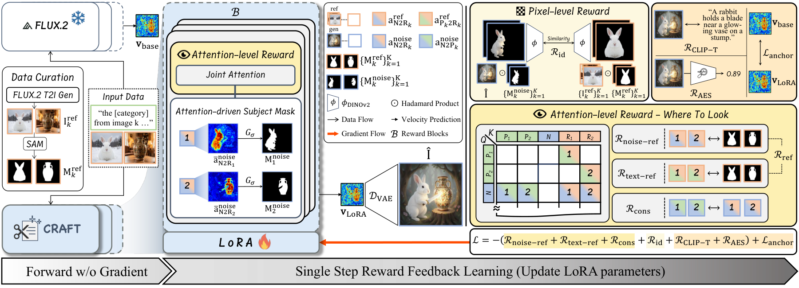
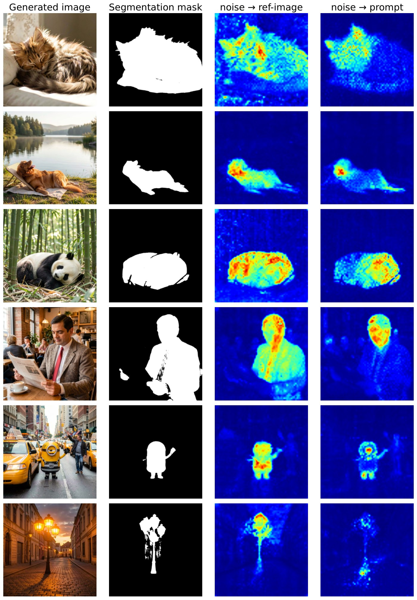
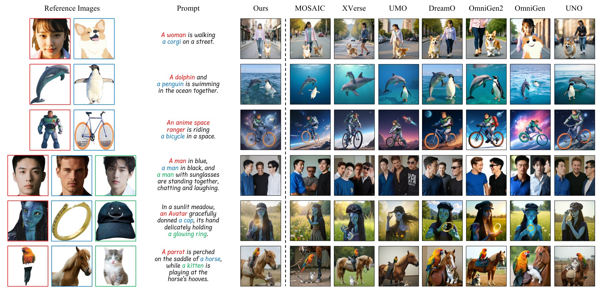
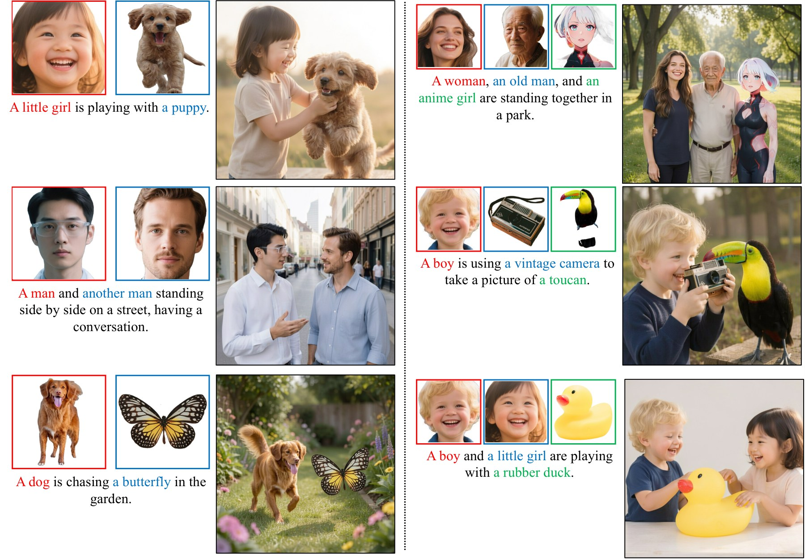
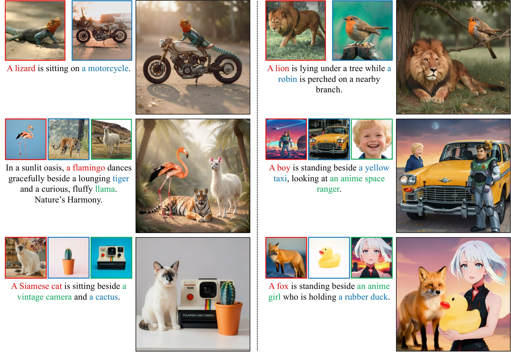
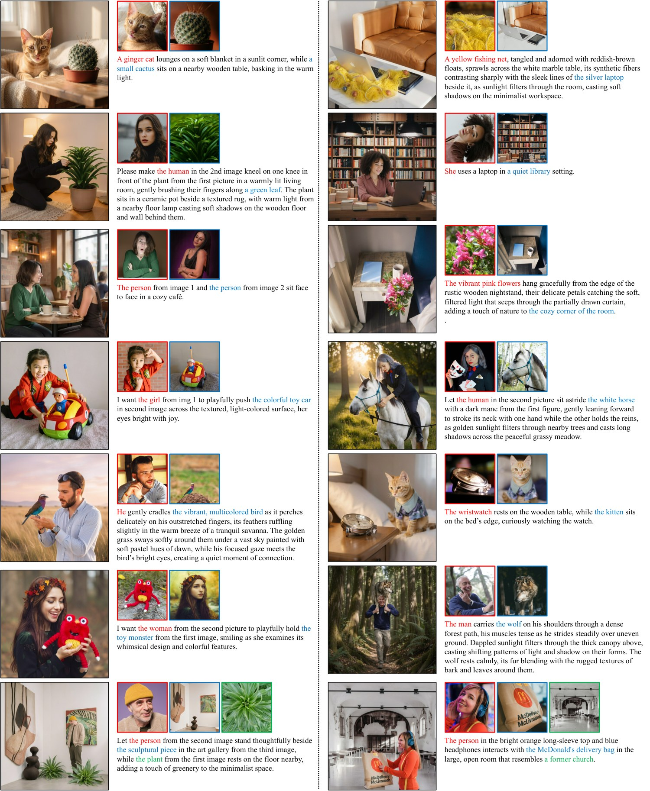
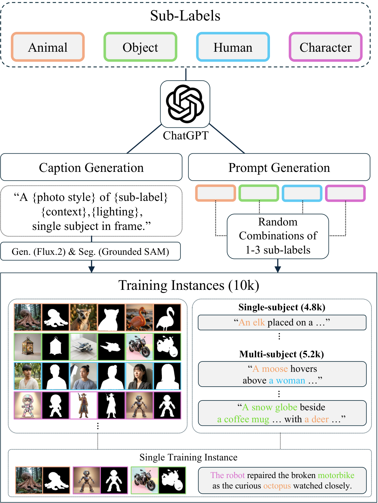

Subject-driven image personalization—generating new images that preserve the identity of one or several reference subjects in novel scenes—is a foundational capability for modern visual content creation. It is currently dominated by generalized methods that fine-tune a pretrained multimodal diffusion transformer (MMDiT) on hundreds of thousands to millions of paired (reference, composed-target) examples, where each composed target is a synthesized image of the subject in a novel scene. Producing such targets demands a costly multi-stage curation pipeline—LLM-based prompt generation, T2I-based composed-target synthesis, reference-subject extraction, VLM-based quality filtering, and correspondence labeling—and tightly couples each method to a particular target synthesizer and curation choice. We introduce CRAFT (Constrained Reward via Attention Fine-Tuning), a single-step ReFL framework that fine-tunes a pre-trained reference-aware MMDiT via LoRA adapters using a compact reference-only data construction—10K reference images and subject masks, with no composed-target supervision. CRAFT realizes a Where to look principle: attention-level rewards align noise- and phrase-token attention with the correct reference subject, and the resulting per-subject attention masks gate a pixel-level identity reward to keep image-space supervision consistent with the learned attention routing. Applied to FLUX.2-klein-9B, CRAFT achieves state-of-the-art performance on XVerseBench while using no composed-target supervision—only 10K reference-only samples, whereas prior generalized methods require 150K to over 2M composed-target pairs. The same recipe transfers to other reference-aware backbones, consistently improving performance.
Key observation. Reference-aware MMDiTs, which jointly attend to text, noise, and reference-image tokens, already produce subject-aligned attention patterns before any fine-tuning. Rather than inducing this routing through large-scale composed-target supervision, CRAFT shapes the existing routing directly with a lightweight reward signal.
Where to look principle. At a small subset of (step, block) coordinates, noise- and prompt-token attention should land on the correct reference subject region. The supervision this requires is minimal — just reference images paired with subject masks.

Pulls both noise queries (\(\mathbf{A}_{N2R_k}\)) and subject-referring phrase queries (\(\mathbf{A}_{P_k 2 R_k}\)) toward the reference-token region \(\mathbf{m}^\text{ref}_k\), so the model extracts subject evidence from the correct part of the reference image.
Projects \(\mathbf{A}_{N2R_k}\) and \(\mathbf{A}_{N2P_k}\) onto the noise grid and maximizes their probabilistic soft IoU, so the two views of subject \(k\) localize at the same place — suppressing duplicated or misplaced subjects in multi-subject scenes.
\(\mathbf{A}_{N2R_k}\) itself yields a per-subject noise-grid mask \(\mathbf{m}^\text{noise}_k\) (Gaussian smoothing + thresholding), which gates a DINOv2 identity reward on the decoded pre-image — no external segmentation of the generated image required.
Implementation. CRAFT is built on FLUX.2-klein-9B, an MMDiT distilled to four denoising
steps, with the backbone frozen and LoRA adapters (rank \(r=64\)) attached to all attention layers.
Training runs at \(1024^2\) resolution for 3,000 optimizer steps on four NVIDIA B200 GPUs with AdamW
(lr \(2\times10^{-6}\)). A subject-routing analysis on the unmodified backbone fixes the reward locus at
\(t^\ast = 2\) and \(\mathcal{B}\) = {single_1, single_9,
single_8}.
Subject masks are used only on the reward side during training — the model never receives them,
so inference remains mask-free.

single_1, shown alongside the Grounded-SAM segmentation of the generated image. \(\mathbf{A}_{N2R}\) concentrates on the
actual subject region and aligns with the segmentation mask; \(\mathbf{A}_{N2P}\) is more diffuse and
frequently leaks outside the subject — which is why the attention-derived gate is built from the
reference-key attention.
“Target.” marks composed-target supervision; “#Data” is the reported training-sample count. † denotes results reproduced with official code; (—) denotes not reported. Best/second-best in bold/underlined. * CRAFT (mask-free) operates on raw, unsegmented references at inference and is reported for reference (not included in the ranking) — this is CRAFT's intended inference mode, and it performs on par with or above the segmented-input configuration.
| Method | Target. | #Data | Single subject (90 prompts) | Multi subject (210 prompts) | Overall ↑ | ||||||||
|---|---|---|---|---|---|---|---|---|---|---|---|---|---|
| DPG ↑ | ID ↑ | IP ↑ | AES ↑ | AVG ↑ | DPG ↑ | ID ↑ | IP ↑ | AES ↑ | AVG ↑ | ||||
| UNO | ✔ | 245K | 89.65 | 47.91 | 80.40 | 55.90 | 68.47 | 85.28 | 31.82 | 67.00 | 54.24 | 59.59 | 64.03 |
| OmniGen | ✔ | 6.5M | 83.90 | 76.51 | 78.46 | 51.41 | 72.57 | 78.23 | 55.53 | 62.32 | 49.84 | 61.48 | 67.03 |
| OmniGen2 | ✔ | 180K | 92.60 | 62.41 | 74.08 | 52.34 | 70.36 | 91.55 | 40.81 | 67.15 | 51.40 | 62.73 | 66.55 |
| DreamO | ✔ | 150K | 96.93 | 75.48 | 70.84 | 54.57 | 74.46 | 88.80 | 50.24 | 64.63 | 52.47 | 64.04 | 69.25 |
| UMO† | ✔ | — | 86.75 | 77.36 | 76.99 | 61.71 | 75.70 | 87.18 | 58.24 | 60.52 | 58.74 | 66.17 | 70.94 |
| XVerse | ✔ | 2M+ | 93.69 | 79.48 | 76.86 | 56.84 | 76.72 | 88.26 | 66.59 | 71.48 | 53.97 | 70.08 | 73.40 |
| MOSAIC | ✔ | 1.2M | 96.55 | 81.98 | 80.92 | 60.77 | 80.05 | 88.94 | 69.90 | 74.27 | 55.02 | 72.03 | 76.04 |
| CRAFT (Ours) | ✘ | 10K | 96.81 | 84.22 | 84.23 | 61.24 | 81.62 | 88.71 | 61.16 | 77.25 | 58.16 | 71.32 | 76.47 |
| CRAFT (mask-free, Ours)* | ✘ | 10K | 98.91 | 87.67 | 86.74 | 62.58 | 83.97 | 89.12 | 60.35 | 77.28 | 59.71 | 71.62 | 77.80 |
CRAFT achieves the best Overall score (76.47) while using only 10K reference-only training instances and no composed-target supervision. On the single-subject split it obtains the best AVG (81.62), improving over the strongest prior method (MOSAIC) by +1.57 points, with the largest gains on identity-related metrics (Single ID 84.22, Single IP 84.23). Compared with the frozen FLUX.2-klein backbone, CRAFT improves Overall by +5.43 points.

(a) FLUX.2-klein backbone; (b) \(+\mathcal{R}_\text{ref}\), (c) \(+\mathcal{R}_\text{cons}\) (cumulative); (d) \(\mathcal{R}_\text{id}\) alone on the backbone; (e) full CRAFT. Best/second-best in bold/underlined.
| Component | Single subject | Multi subject | Overall ↑ | |||||||||||
|---|---|---|---|---|---|---|---|---|---|---|---|---|---|---|
| \(\mathcal{R}_\text{ref}\) | \(\mathcal{R}_\text{cons}\) | \(\mathcal{R}_\text{id}\) | DPG ↑ | ID ↑ | IP ↑ | AES ↑ | AVG ↑ | DPG ↑ | ID ↑ | IP ↑ | AES ↑ | AVG ↑ | ||
| (a) | 97.22 | 66.29 | 78.15 | 59.76 | 75.36 | 88.91 | 50.22 | 71.23 | 56.52 | 66.72 | 71.04 | |||
| (b) | ✔ | 96.89 | 70.15 | 79.75 | 60.84 | 76.91 | 88.94 | 48.11 | 72.69 | 57.86 | 66.90 | 71.91 | ||
| (c) | ✔ | ✔ | 97.22 | 70.63 | 81.19 | 61.94 | 77.75 | 88.09 | 50.43 | 70.70 | 58.71 | 66.98 | 72.37 | |
| (d) | ✔ | 96.67 | 73.27 | 81.93 | 61.96 | 78.46 | 87.32 | 50.77 | 72.90 | 60.24 | 67.81 | 73.14 | ||
| (e) | ✔ | ✔ | ✔ | 96.81 | 84.22 | 84.23 | 61.24 | 81.62 | 88.71 | 61.16 | 77.25 | 58.16 | 71.32 | 76.47 |
The attention rewards and the pixel identity reward are complementary. \(\mathcal{R}_\text{id}\) alone (d) already improves over the backbone, but adding \(\mathcal{R}_\text{ref}\) and \(\mathcal{R}_\text{cons}\) sharpens the attention-derived gate and yields a further jump to 76.47 Overall — image-space identity supervision is most effective when the gate that localizes it is itself shaped by the attention rewards.
CRAFT applied to UNO and UMO on XVerseBench. † denotes results reproduced with official code.
| Method | Target. | Single AVG ↑ | Multi AVG ↑ | Overall ↑ |
|---|---|---|---|---|
| UNO | ✔ | 68.47 | 59.59 | 64.03 |
| UNO + Ours | ✘ | 76.61 | 67.04 | 71.83 |
| UMO† | ✔ | 75.70 | 66.17 | 70.94 |
| UMO + Ours | ✘ | 79.75 | 69.49 | 74.62 |
UNO + CRAFT — supervised entirely by reference-side rewards — outperforms UMO, which is itself a reward-based fine-tuning of the same UNO backbone but requires composed-target supervision.
Preference (%) on Identity Consistency (IC), Prompt Fidelity (PF), and Image Quality (IQ). For each question, participants see image sets from four methods in randomized order and select the best.
| Method | IC ↑ | PF ↑ | IQ ↑ |
|---|---|---|---|
| UMO | 15.0 | 5.9 | 26.0 |
| XVerse | 15.0 | 18.3 | 16.5 |
| MOSAIC | 14.8 | 13.2 | 23.3 |
| Ours | 55.2 | 62.6 | 34.2 |
CRAFT is preferred by a large margin on identity consistency and prompt fidelity against the top three quantitative performers.



Because subject masks are used only as reward-side training annotations, CRAFT runs on raw, unsegmented references at inference (mask-free protocol) and reaches an even higher Overall score (77.80) than the segmented-input configuration.
